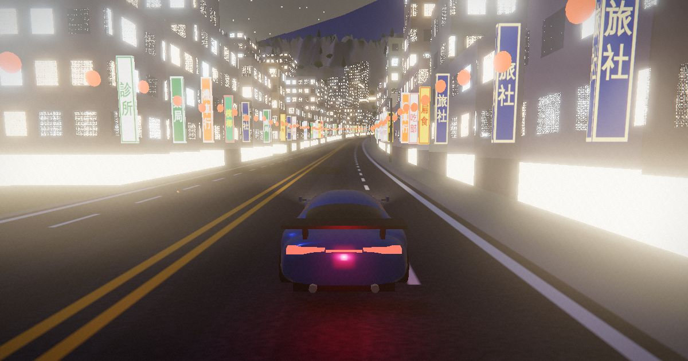
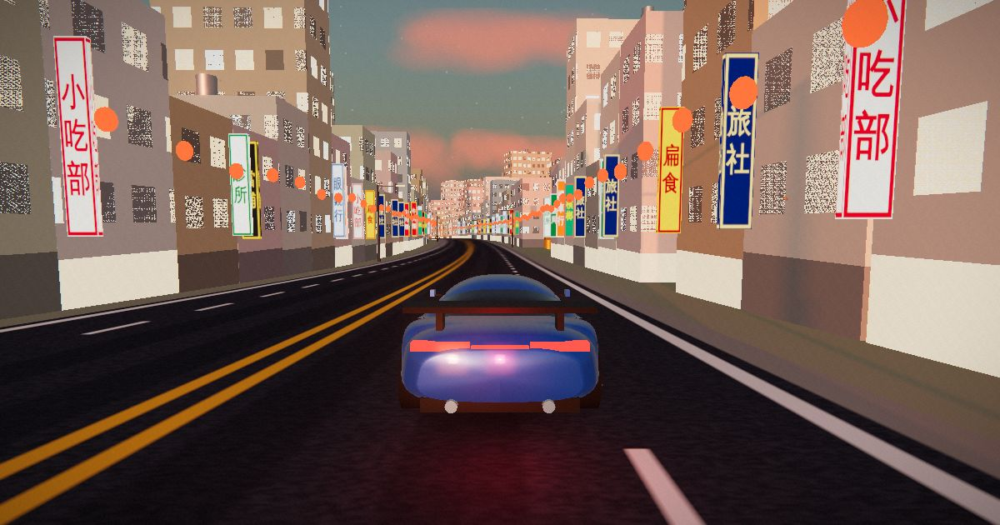
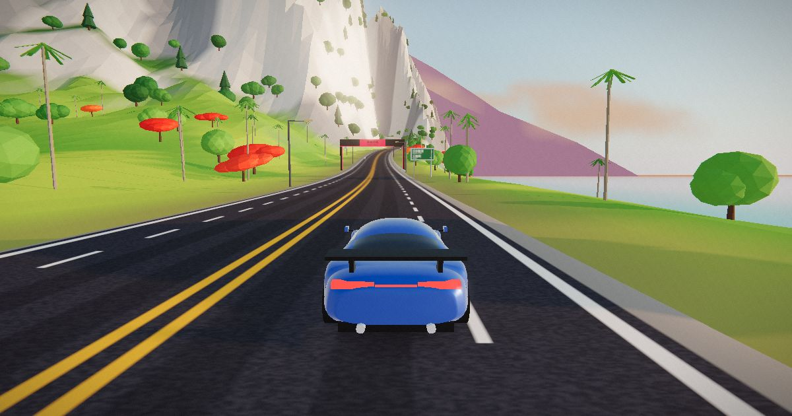
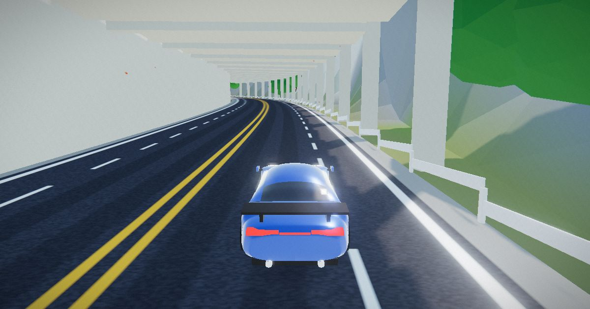
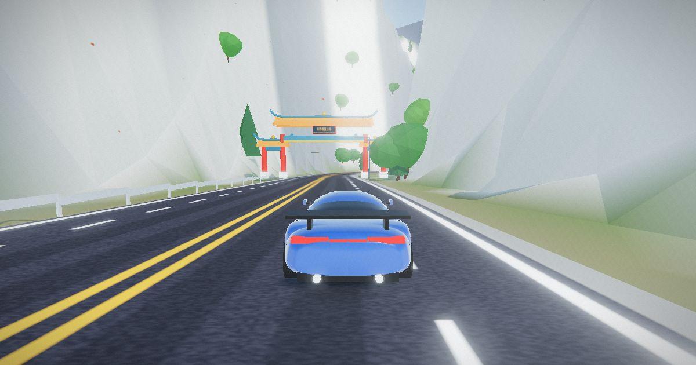

花蓮市區HUALIEN CITY
兩排透天厝，牛肉麵、扁食、麻糬、藥局的直立招牌伸到路上，屋頂一顆顆不鏽鋼水塔。切到「夜市」時段，整條街的燈籠和招牌都會亮起來，路邊還有一間燕尾脊的宮廟。

地圖是以花蓮東海岸為靈感、縮小簡化過的虛構版本。開過每一段都會跳出地名，小地圖會告訴你下一個挑戰在哪裡。

兩排透天厝，牛肉麵、扁食、麻糬、藥局的直立招牌伸到路上，屋頂一顆顆不鏽鋼水塔。切到「夜市」時段，整條街的燈籠和招牌都會亮起來，路邊還有一間燕尾脊的宮廟。

礫石海灘配上太平洋的淺藍海水，路邊是檳榔樹、鳳凰木和稻田，還有亮著霓虹框的檳榔攤。選「日出」時段，太陽會從海面升起。

蘇花公路貼著山壁走，靠海那側是護欄，一段水泥柱撐起的明隧道把陽光切成一格一格。這裡車道筆直，很適合衝測速照相。

穿過「東西橫貫公路」的牌樓，兩側變成白灰色的大理石峭壁，山腰上有一座綠瓦涼亭。往山裡的連續彎是甩尾挑戰的地方。
沒有終點，也沒有倒數計時。想慢慢兜風看風景可以，想衝分數也可以。
甩尾、飆速、騰空、驚險閃過汽車或機車都會得到風格分。連續做技巧倍率會往上加，撞車就整段歸零。
路上有兩座測速門，通過時記錄時速，拿一到三顆星，最佳紀錄會存在你的瀏覽器裡。
山路的連續彎是計分路段，在區間內甩得越久越快，分數越高。
路上有黃色計程車和一群機車，機車騎在外側的機慢車道上。閃過去有分，撞上去就扣連段。
太平洋日出、晴天、黃昏、夜市。隨時按 T 切換，夜裡會自動開大燈。
第一次開會有一步一步的教學：油門、轉彎、煞車、甩尾，每一步做到了才會往下，隨時可以跳過。
鍵盤、手把、手機觸控都支援。手機請橫放，畫面會自動調整按鈕位置。
| 動作 | 鍵盤 | 手機 | 手把 |
|---|---|---|---|
| 油門 | W 或 ↑ | 預設自動油門，也可以按「油門」 | RT |
| 轉向 | A D 或 ← → | 左半邊螢幕左右拖曳 | 左搖桿 |
| 煞車／倒車 | S 或 ↓ | 「煞車」 | LT |
| 手煞車（甩尾） | 空白鍵 | 「甩尾」 | A |
| 渦輪 | Shift | 「BOOST」 | B 或 RB |
| 換視角／時段 | C／T | 暫停選單 | — |
| 回到路上 | R | 暫停選單 | — |
| 暫停 | Esc | — | — |
不用。這是完全免費的網頁遊戲，用瀏覽器打開就能玩，不需要安裝或註冊。
可以。建議把手機橫放：左半邊拖曳轉向，右邊有煞車、甩尾和渦輪按鈕，預設會自動踩油門。
不是。地形與道路是以花蓮東海岸為靈感、縮小並簡化後的虛構版本，地標的位置與比例都和現實不同，請不要拿來當導航參考。
支援 WebGL 的新版 Chrome、Edge、Safari 或 Firefox 即可。內顯也能跑，畫面卡頓時可以把瀏覽器視窗縮小一些。
只存在你自己的瀏覽器裡（localStorage），不會上傳到任何伺服器。清除瀏覽器資料就會歸零。